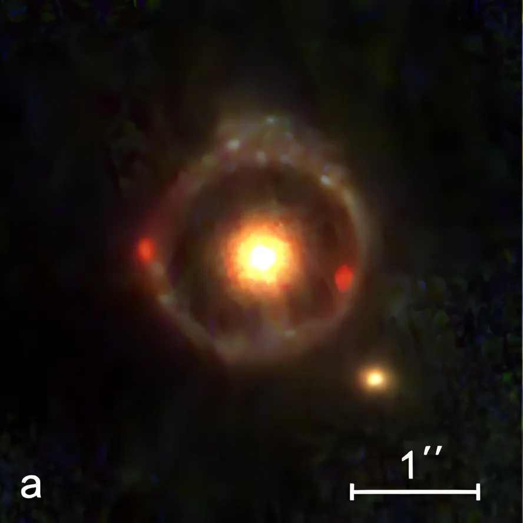
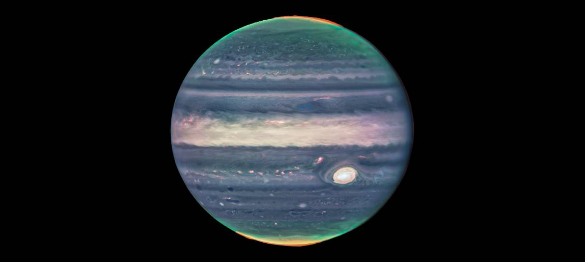
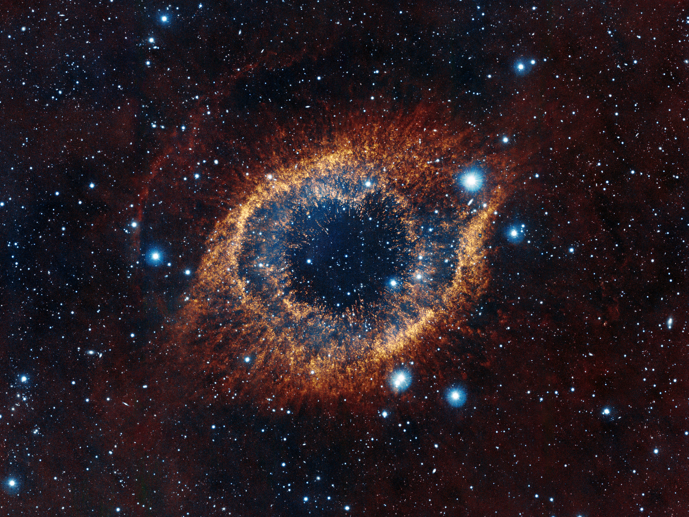
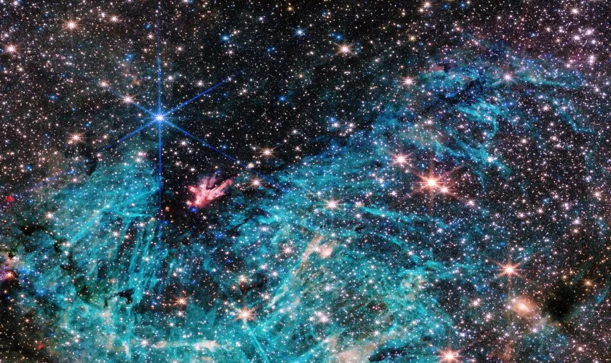

Galeria Astronômica
Explore as imagens mais deslumbrantes do universo capturadas pelos maiores telescópios da humanidade

SMACS 0723
O rico aglomerado de galáxias capturado em 12,5 horas de exposição. É a visão infravermelha mais profunda já alcançada desta pequena região do universo, mostrando galáxias que existiram há 13 bilhões de anos.

Pilares da Criação
O Telescópio Espacial James Webb capturou uma imagem altamente detalhada dos Pilares da Criação, uma estrutura astronômica formada por nuvens de gás e poeira a 6,5 mil anos-luz de distância da Terra.

Anel de Einstein
Um círculo perfeito de luz formado pela distorção gravitacional de uma galáxia distante.

Galáxia de Andrômeda
Nossa vizinha cósmica mais próxima, a 2,5 milhões de anos-luz de distância.

Nebulosa do Caranguejo
Remanescente de supernova registrada por astrônomos chineses em 1054 d.C.

Buraco Negro M87*
Primeira imagem direta de um buraco negro, capturada pelo Event Horizon Telescope.

Nebulosa de Órion
Berçário estelar visível a olho nu, a 1.344 anos-luz da Terra.

Galáxia do Sombrero
M104, famosa por sua faixa de poeira escura e núcleo brilhante.

Júpiter em Detalhes
Imagens inéditas do maior planeta do sistema solar pelo James Webb.

Nebulosa da Hélix
Conhecida como "Olho de Deus", restos de uma estrela semelhante ao Sol.

Centro da Via Láctea
Vista panorâmica do núcleo galáctico com bilhões de estrelas.

Saturno e seus Anéis
O senhor dos anéis em toda sua glória durante o equinócio.

Campo Profundo Hubble
Milhares de galáxias em uma pequena fração do céu, algumas com 13 bilhões de anos.